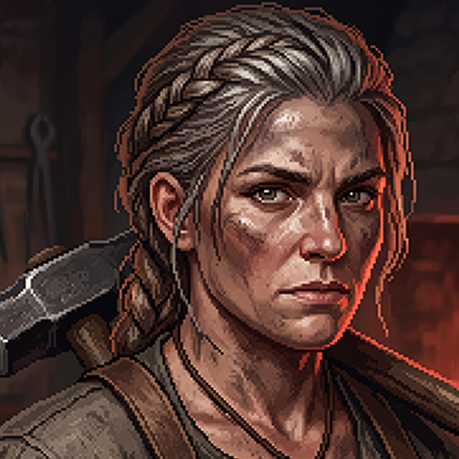
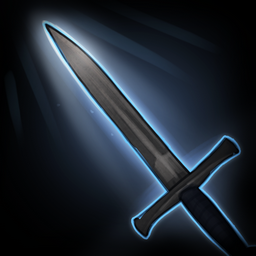
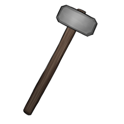
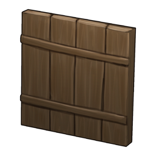
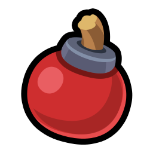
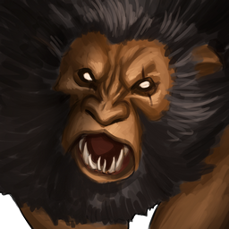
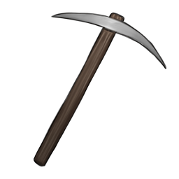
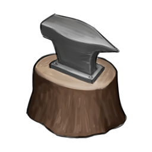

모든 것을 벼려내는 시대 — 제작·수집 다크 판타지
Ver 5.114 · 결정의 시대 데모
결정의 시대
계정을 선택해 접속하세요
데모 로그인 목업 · 실제 인증은 수행하지 않습니다
계정 선택
🛡️
군주최근 접속 · 화로 1서버
▶⚒️
무명의 대장장이신규 캐릭터 생성
▶🕯️
잿불 순례자보관 중인 계정
▶서버 선택
서버를 선택한 뒤 입장하세요.
선택한 서버는 바꿀 수 없습니다.
선택한 서버는 바꿀 수 없습니다.
화로 1서버
입장 하시겠습니까?
선택한 서버는 변경할 수 없습니다.
다른 서버의 캐릭터·재화는 공유되지 않습니다.
다른 서버의 캐릭터·재화는 공유되지 않습니다.
군주
불의 견습
0
＋
☰
06:00
100%
＋절전
부활
부활시 몬스터 (표적)가 소환됩니다
8
초 후 자동 재소환 됩니다

리안
▶
🧭길잡이 퀘스트
🎟️X20

공략소통
우편
버프
세트효과
유저소통
공지

절전
설정도감
칭호
도움말
7일출석
퀘스트
요일던전

보스골드던전

월드보스코스튬

시련의탑패키지
전체
서버
길드
시스템
자동전투 Off
＋
－
몬스터
영웅
인벤토리

00:00
소환
투기장
상점
제목
✕
✨